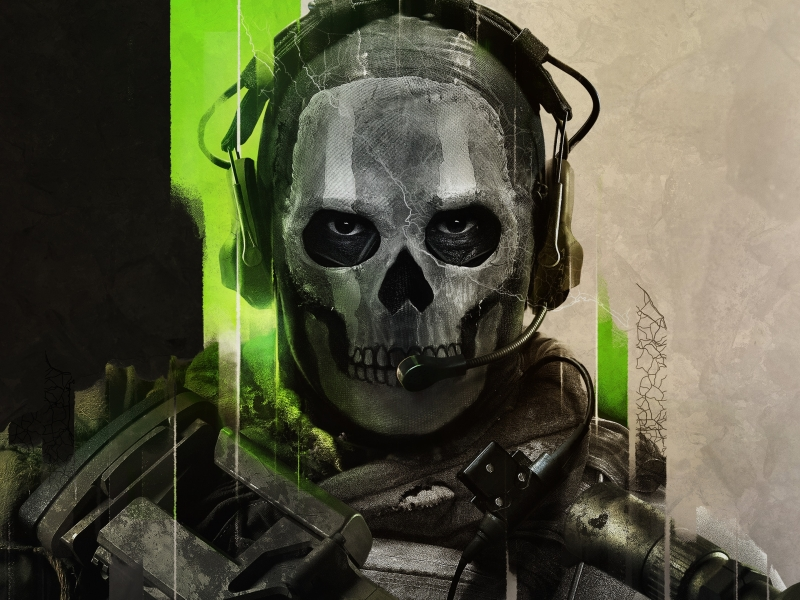

Call of Duty è una serie di videogiochi sparatutto in prima persona a tema bellico, sviluppata inizialmente da Infinity Ward e successivamente da altri studi. Il gioco si caratterizza per la sua intensa esperienza di combattimento, grafica realistica e trame coinvolgenti. Dalle campagne ambientate nella Seconda Guerra Mondiale alle battaglie futuristiche, COD ha saputo reinventarsi e mantenere alto l'interesse dei giocatori di tutto il mondo. La serie è celebre anche per il suo multigiocatore, che offre mappe dinamiche, numerose modalità di gioco e una comunità di appassionati sempre attiva. Clicca qui per maggiori informazioni.